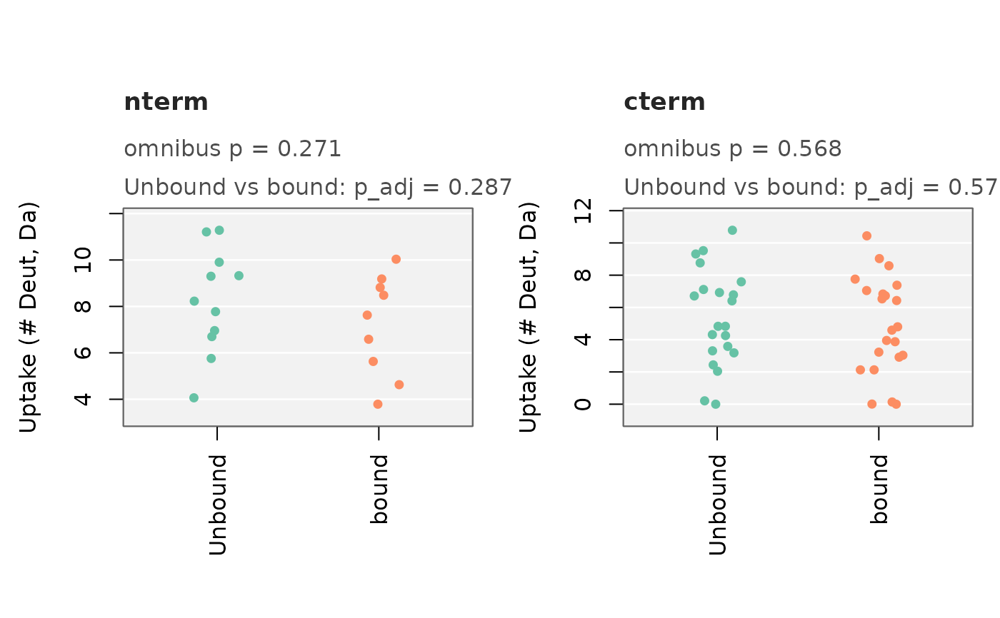
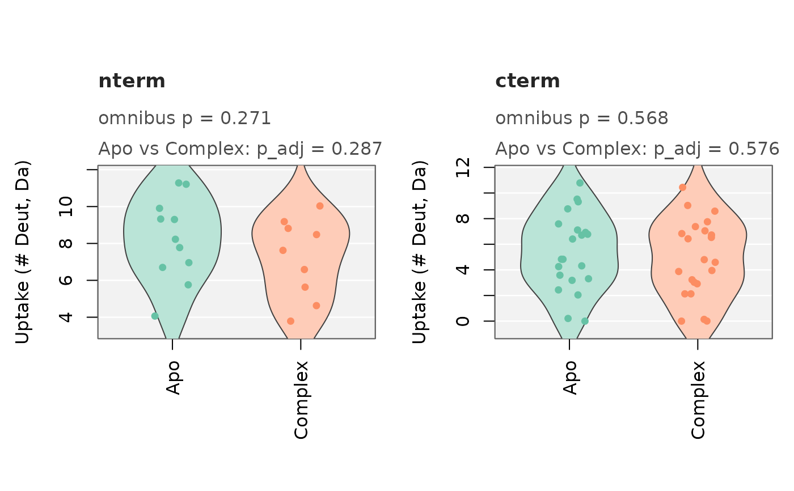

Plot the pooled distributions behind compare_states_unmatched()
Source: R/plot_coverage_diagnostics.R
plot_compare_states_unmatched.RdDraws what the comparison actually ran on: one panel per region, the
pooled deut_value values by state (one value per peptide, or per
replicate under method = "classic" - whatever res$data holds) as a
box, violin, or plain jittered-point strip (plot_type), with the
omnibus p-value and every pairwise result annotated on each panel. The
y-axis label follows res$value automatically (raw Da uptake by default -
see compare_states_unmatched()'s value argument). Works for any
number of states compare_states_unmatched() was run with, not only two.
This is the "show me the test" companion to
plot_coverage_diagnostics(), which instead shows whether the test
should be trusted in the first place (peptide-map overlap) rather than
its result.
Usage
plot_compare_states_unmatched(
res,
plot_type = c("jitter", "box", "violin"),
palette = "Set2",
digits = 3,
state_labels = NULL,
cex_annot = 1,
show_points = TRUE,
point_cex = 0.9,
jitter_width = 0.15,
tint = 0.55,
notch = FALSE,
bg = "grey95",
grid_col = "white",
show_grid = TRUE,
font_family = ""
)Arguments
- res
the list returned by
compare_states_unmatched()(usesres$dataandres$summary).- plot_type
one of
"jitter"(just the individual points, no summary shape - the safest default when you want to see every peptide, not only significant ones, at a glance),"box", or"violin"(kernel density per state). Default"jitter".- palette
either a single
RColorBrewerqualitative palette name (default"Set2") or an explicit vector of colors, one per state.- digits
number of significant digits for the annotated p-values. Default
3.- state_labels
optional named character vector mapping raw state names (as they appear in the data, e.g. HDX Examiner's unedited
"Protein State 1") to display labels (e.g.c("Protein State 1" = "Apo tubulin")) - used on the x-axis and in the p-value annotations. States not named in this vector are shown as-is. DefaultNULLshows every state's raw name unchanged.- cex_annot
text size for the p-value annotation lines. Default
1.- show_points
logical; overlay jittered individual data points on top of the box/violin shape. Always
TRUE(and unused) whenplot_type = "jitter". DefaultTRUE.- point_cex
size of the jittered points. Default
0.9.- jitter_width
horizontal jitter width for points, as a fraction of the box spacing. Default
0.15.- tint
how much lighter than the base state color the box/violin fill is,
0(no lightening) to1(white) - see "On color and visibility". Default0.55.- notch
logical; draw notched boxes (a visual approximation of a comparison interval around each median). Only applies to
plot_type = "box". DefaultFALSE.- bg
panel background color. Default
"grey95"; use"white"for a plain white panel.- grid_col
gridline color drawn over
bg. Default"white".- show_grid
logical; draw the shaded background/gridlines at all. Default
TRUE.- font_family
font family passed to text-drawing calls. Default
""(device default).
On color and visibility
Fills and points here are drawn as fully OPAQUE colors (box/violin fills
lightened by blending toward white in RGB space, not by alpha
transparency) deliberately - some graphics devices (notably Windows'
native windows() device, which RStudio's Plots pane can fall back to)
render semi-transparent fills or points as invisible or fully solid
instead of blending them, a real failure mode this avoids entirely by
never depending on device compositing for whether data is visible.
Examples
# \donttest{
file_nm <- system.file("extdata", "All_results_table.csv", package = "HDXBoxeR")
res <- compare_states_unmatched(file_nm, times = "1800.00s",
regions = list(nterm = c(1, 100), cterm = c(101, 225)))
plot_compare_states_unmatched(res)

plot_compare_states_unmatched(res, plot_type = "violin",
state_labels = c(Unbound = "Apo", bound = "Complex"))

# }